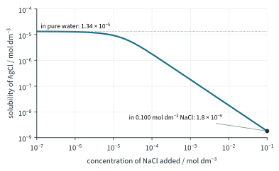
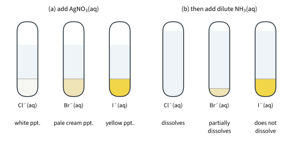

Chemistry of Aqueous Solutions 3
Topic 10 · Chemistry of Aqueous Solutions Part 3
On this page
"Insoluble" salts such as silver chloride and barium sulfate do dissolve, just very slightly. The little that dissolves sets up an equilibrium between the solid and its ions, and the equilibrium law (Topic 9) applies to it like any other. This Part puts a number on how much dissolves, uses it to predict whether a precipitate will form, and looks at two ways of changing the solubility: adding an ion that is already there, and pulling one of the ions away into a complex.
Key terms
| Term | Meaning |
|---|---|
| Solubility | The amount (mol dm−3) or mass (g dm−3) of a substance that dissolves in a solvent to give a saturated solution, at a given temperature. |
| Saturated solution | A solution in dynamic equilibrium with undissolved solute: no more will dissolve at that temperature. |
| Solubility product, Ksp | The product of the concentrations of the ions in a saturated solution of a sparingly soluble salt, each raised to the power of its coefficient in the equilibrium equation, at a given temperature. |
| Ionic product | The same product worked out with the actual concentrations in a solution, saturated or not. |
| Common ion effect | The lowering of the solubility of a salt by adding a solution that already contains one of its ions. |
| Complex ion | A central metal ion bonded to one or more ligands (molecules or ions with a lone pair) by dative covalent bonds, e.g. [Ag(NH3)2]+. |
Solubility equilibria
Shake some solid silver chloride with water. A very small amount dissolves, and soon the solution is saturated. Ions are still leaving the solid, but at the same rate as ions are rejoining it: a dynamic equilibrium between the solid and its ions in solution.
AgCl(s) ⇌ Ag+(aq) + Cl−(aq)
Writing K for this equilibrium, the solid is left out, as all pure solids are (Topic 9 Part 1). What is left is the solubility product:
Ksp = [Ag+][Cl−] = 1.8 × 10−10 mol2 dm−6 at 298 K
For a general sparingly soluble salt AxBy:
AxBy(s) ⇌ xAy+(aq) + yBx−(aq) Ksp = [Ay+]x[Bx−]y
Like every equilibrium constant, Ksp depends only on temperature. Work the units out from the expression each time:
| Salt | Equilibrium | Ksp | Units |
|---|---|---|---|
| AgBr | AgBr(s) ⇌ Ag+(aq) + Br−(aq) | [Ag+][Br−] | mol2 dm−6 |
| PbI2 | PbI2(s) ⇌ Pb2+(aq) + 2I−(aq) | [Pb2+][I−]2 | mol3 dm−9 |
| Ag2CrO4 | Ag2CrO4(s) ⇌ 2Ag+(aq) + CrO42−(aq) | [Ag+]2[CrO42−] | mol3 dm−9 |
| Mg(OH)2 | Mg(OH)2(s) ⇌ Mg2+(aq) + 2OH−(aq) | [Mg2+][OH−]2 | mol3 dm−9 |
| Ca3(PO4)2 | Ca3(PO4)2(s) ⇌ 3Ca2+(aq) + 2PO43−(aq) | [Ca2+]3[PO43−]2 | mol5 dm−15 |
Ksp is used only for sparingly soluble salts.1 Some literature values at 298 K (the Data Booklet does not list Ksp; sources differ by a few per cent):
| Salt | Ksp | Salt | Ksp |
|---|---|---|---|
| AgCl | 1.8 × 10−10 mol2 dm−6 | Ag2CrO4 | 1.1 × 10−12 mol3 dm−9 |
| AgBr | 5.0 × 10−13 mol2 dm−6 | CaF2 | 3.5 × 10−11 mol3 dm−9 |
| AgI | 8.5 × 10−17 mol2 dm−6 | Mg(OH)2 | 5.6 × 10−12 mol3 dm−9 |
| BaSO4 | 1.1 × 10−10 mol2 dm−6 | Ca(OH)2 | 5.0 × 10−6 mol3 dm−9 |
| CaCO3 | 3.4 × 10−9 mol2 dm−6 | PbI2 | 9.8 × 10−9 mol3 dm−9 |
| CaSO4 | 4.9 × 10−5 mol2 dm−6 | PbCl2 | 1.7 × 10−5 mol3 dm−9 |
Calculations with Ksp
Let the solubility be s mol dm−3. Each formula unit that dissolves gives its ions in the ratio of the formula:
- for a 1 : 1 salt such as AgCl: [Ag+] = [Cl−] = s, so Ksp = s2;
- for a 1 : 2 salt such as PbI2: [Pb2+] = s, [I−] = 2s, so Ksp = s × (2s)2 = 4s3. The same holds for 2 : 1 salts such as Ag2CrO4.
Notice the 2s is squared: a common slip is to write s × 2s2.
Worked example 1: solubility from Ksp
Calculate the solubility of (a) silver chloride, in mol dm−3 and g dm−3; (b) magnesium hydroxide, and the pH of its saturated solution, at 298 K.
(a) Ksp = s2 = 1.8 × 10−10
s = √(1.8 × 10−10) = 1.34 × 10−5 mol dm−3
in g dm−3: 1.34 × 10−5 × 143.4 = 1.92 × 10−3 g dm−3 (Mr of AgCl 143.4)
(b) (To answer (b), notice that [OH−] = 2s.) Ksp = s(2s)2 = 4s3 = 5.6 × 10−12
s = ∛((5.6 × 10−12) / 4) = 1.12 × 10−4 mol dm−3 (6.5 × 10−3 g dm−3; Mr 58.3)
[OH−] = 2 × 1.12 × 10−4 = 2.24 × 10−4 mol dm−3
pOH = 3.65 pH = 14.00 − 3.65 = 10.35
(Saturated magnesium hydroxide is only mildly alkaline, which is why a suspension of it, milk of magnesia, can be swallowed as an antacid.)
Worked example 2: Ksp from solubility
A saturated solution of lead(II) iodide at 298 K contains 0.621 g of PbI2 per dm3. Calculate Ksp. (Illustrative data: the 0.621 g was worked back from the literature Ksp, not measured.)
Mr(PbI2) = 207.2 + (2 × 126.9) = 461.0
s = 0.621 / 461.0 = 1.347 × 10−3 mol dm−3 (keep 4 figures until the end)
[Pb2+] = 1.347 × 10−3 mol dm−3 [I−] = 2.694 × 10−3 mol dm−3
Ksp = [Pb2+][I−]2 = (1.347 × 10−3) × (2.694 × 10−3)2 = 9.8 × 10−9 mol3 dm−9
Comparing solubilities
For salts of the same formula type, the smaller Ksp, the less soluble the salt: AgCl > AgBr > AgI (1.34 × 10−5, 7.1 × 10−7, 9.2 × 10−9 mol dm−3). But you cannot compare Ksp values across formula types, because the units and the algebra differ. Ag2CrO4 has the smaller Ksp (1.1 × 10−12, against 1.8 × 10−10 for AgCl), yet it is the more soluble: s = ∛((1.1 × 10−12) / 4) = 6.5 × 10−5 mol dm−3, about five times the solubility of AgCl. To compare, work out s for each.
Predicting precipitation
Mix two solutions, each containing one of the ions of a sparingly soluble salt. Will a precipitate form? Work out the ionic product: the Ksp expression with the concentrations just after mixing, before anything precipitates.2
Remember that mixing dilutes both solutions.
Worked example 3
Predict whether a precipitate forms when (a) equal volumes of 1.0 × 10−4 mol dm−3 silver nitrate and 1.0 × 10−4 mol dm−3 sodium chloride are mixed; (b) 10.0 cm3 of 0.0100 mol dm−3 lead(II) nitrate is mixed with 10.0 cm3 of 0.0100 mol dm−3 potassium iodide.
(a) (Equal volumes: each concentration is halved.) [Ag+] = [Cl−] = 5.0 × 10−5 mol dm−3
ionic product = (5.0 × 10−5) × (5.0 × 10−5) = 2.5 × 10−9 mol2 dm−6
This is greater than Ksp (1.8 × 10−10 mol2 dm−6), so AgCl precipitates.
(b) [Pb2+] = [I−] = 0.0100 × (10.0 / 20.0) = 0.00500 mol dm−3
ionic product = [Pb2+][I−]2 = 0.00500 × (0.00500)2 = 1.25 × 10−7 mol3 dm−9
This is greater than Ksp (9.8 × 10−9 mol3 dm−9), so PbI2 precipitates (a bright yellow solid).
The common ion effect
Add sodium chloride solution to a saturated solution of silver chloride. The extra Cl− shifts the position of
AgCl(s) ⇌ Ag+(aq) + Cl−(aq)
to the left (Le Chatelier, Topic 9 Part 2): the ionic product [Ag+][Cl−] is now greater than Ksp, so AgCl precipitates until the product is back to Ksp. Less AgCl can stay in solution. This lowering of solubility by an ion that is already present is the common ion effect. Ksp itself does not change (only temperature changes it); the solubility does.

Worked example 4
Calculate the solubility of silver chloride in 0.100 mol dm−3 sodium chloride at 298 K, and compare it with its solubility in water.
(Let s mol dm−3 of AgCl dissolve. Then [Ag+] = s, but [Cl−] = 0.100 + s ≈ 0.100, because s is tiny compared with 0.100.)
Ksp = [Ag+][Cl−]: 1.8 × 10−10 = s × 0.100 s = 1.8 × 10−9 mol dm−3
In pure water s = 1.342 × 10−5 mol dm−3 (unrounded), and (1.342 × 10−5) / (1.8 × 10−9) = 7456, so the AgCl is about 7500 times less soluble in the salt solution. In the same way, magnesium hydroxide in 0.0100 mol dm−3 NaOH: s = (5.6 × 10−12) / (0.0100)2 = 5.6 × 10−8 mol dm−3, against 1.12 × 10−4 in water.
The common ion effect is used whenever a precipitate must be collected with as little loss as possible: a precipitate of barium sulfate, for example, is washed with very dilute sulfuric acid rather than pure water (Further example). It also explains the buffer calculations of Part 2: the CH3COO− from the salt suppresses the dissociation of CH3COOH, which is why [CH3COOH] can be taken as the concentration of acid put in.
Worked example 5: when does a hydroxide start to precipitate? (Further example)
A solution contains 0.0100 mol dm−3 Mg2+. Sodium hydroxide is added slowly. At what pH does magnesium hydroxide start to precipitate?
Precipitation starts when the ionic product [Mg2+][OH−]2 reaches Ksp:
[OH−] = √((5.6 × 10−12) / 0.0100) = 2.37 × 10−5 mol dm−3
pOH = 4.63 pH = 14.00 − 4.63 = 9.37
Complex ion formation
The second way to change a solubility is to remove one of the ions from solution altogether. Silver ions bond to two ammonia molecules, each NH3 giving a lone pair to Ag+ in a dative covalent bond (a Lewis acid-base reaction, Topic 4), to form the linear diamminesilver(I) ion:
Ag+(aq) + 2NH3(aq) ⇌ [Ag(NH3)2]+(aq)
Complex ions are covered in Topic 13. Here we need only their effect on solubility.
The silver halides and ammonia
The test for halide ions: acidify the solution with dilute nitric acid,3 add aqueous silver nitrate, then add aqueous ammonia. The Data Booklet (Qualitative Analysis Notes) gives the results (Fig 2):
| Halide | With Ag+(aq) | Then NH3(aq) | Ksp of AgX / mol2 dm−6 |
|---|---|---|---|
| Cl−(aq) | white ppt. of AgCl | soluble | 1.8 × 10−10 |
| Br−(aq) | pale cream ppt. of AgBr | partially soluble | 5.0 × 10−13 |
| I−(aq) | yellow ppt. of AgI | insoluble | 8.5 × 10−17 |
Ag+(aq) + X−(aq) → AgX(s)

Why does ammonia dissolve the precipitate? Two equilibria are linked through [Ag+]:
AgCl(s) ⇌ Ag+(aq) + Cl−(aq)
Ag+(aq) + 2NH3(aq) ⇌ [Ag(NH3)2]+(aq)
- The ammonia takes Ag+ out of solution as the complex ion, so [Ag+] falls.
- The ionic product [Ag+][Cl−] drops below Ksp, so more AgCl dissolves: the position of the first equilibrium shifts to the right.
- With enough ammonia, all the AgCl dissolves. Overall:
AgCl(s) + 2NH3(aq) ⇌ [Ag(NH3)2]+(aq) + Cl−(aq)
The difference between the halides is the size of Ksp. To dissolve AgCl, ammonia only has to bring [Ag+] down to below 1.8 × 10−10 / [Cl−], which dilute ammonia easily does. AgBr has a Ksp 360 times smaller, so [Ag+] must be pushed much lower: dilute ammonia dissolves only part of it, concentrated ammonia all of it. AgI has a Ksp about two million times smaller than AgCl's: even concentrated ammonia dissolves only a tiny amount of it, far too little to see the precipitate go, so the Data Booklet calls it insoluble.
The same idea explains other observations in the Qualitative Analysis Notes (Further example): copper(II) hydroxide, a blue precipitate, dissolves in excess aqueous ammonia to give a dark blue solution, because Cu2+ forms a complex with ammonia (Topic 13).
Summary
Additional information
- Beyond the syllabus: for a very soluble salt such as NaCl the ions in a saturated solution are so crowded that they no longer behave independently, and the simple Ksp expression does not hold. ↩
- The ionic product is the ratio of Topic 9 Part 2 (the K expression worked out with the concentrations at that moment), compared with Ksp in the same way. Beyond the syllabus: its general name is the reaction quotient, Q (Topic 9 Part 2, footnote 1). ↩
- The nitric acid removes ions such as CO32− and OH−, which would also give precipitates with Ag+. Hydrochloric acid cannot be used, because it adds Cl−. ↩